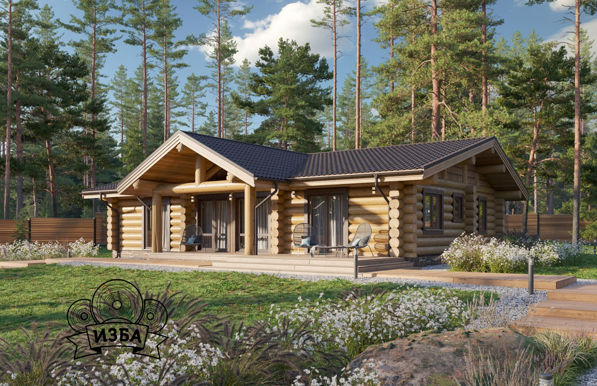
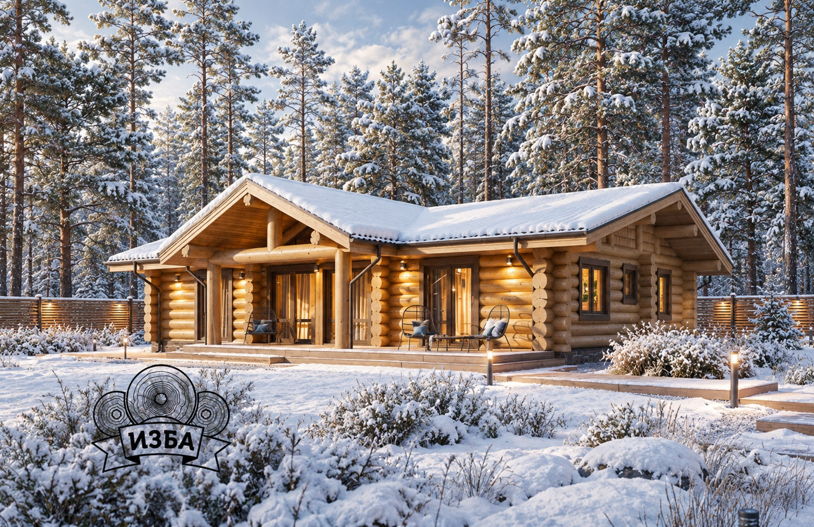

Изба · Санкт-Петербург
Деревянные дома и бани ручной рубки
Проектируем и строим деревянные дома и бани. Выберите близкую архитектуру и обсудите будущий сруб.
Посмотреть домаПРИМЕРЫ РЕШЕНИЙ
Деревянные дома в разных форматах
Посмотрите дома на участке и варианты террас. Материал, планировку и состав работ согласуем до строительства.

Деревянный дом зимой
Изба · Санкт-Петербург
Деревянный дом зимой
Посмотрите дома на участке и варианты террас. Материал, планировку и состав работ согласуем до строительства.
Обсудить строительство